P2 Designdetaljer
Aasne, Dora Oline, Julie, Katrine
IT2805, 7. Oktober, 2015
Administreringsinformasjon
Klient: Studentforeningen i Trondheim (SfiT)
Websidens navn: StudentMat
Kontaktperson: Katrine Jordheim
Hensikt, mål og publikum
Hensikten med siden er å gi studenter en matside rettet mot deres behov. Studenter er ofte nye på kjøkkenet, med lite erfaring, penger og tid og dette kan lett føre til en nuddel- eller grandiosa-diett. SfiT ønsker av denne grunn å lage en side med tips til økonomi, middagsretter og matpakker, matlagingstips, basisingredienser og lignende, for å gjøre studenttilværelsen lettere på matfronten. Publikum er hovedsakelig studenter, men kan brukes av alle som finner siden nyttig.
Navigasjonsstruktur
Siden vil ha en navigasjonsbar på toppen av siden som vil være fiksert når man scroller og går til andre sider. Denne viser fire av sidene (hjem, tips, oppskrifter og andre linker). Når man holder musen over en av dem eller klikker, vil en drop-down meny dukke opp hvor man enten kan navigere seg til andre sider. Der det er hensiktsmessig kan man navigere seg rundt på siden ved hjelp av en ankermeny.
Ved å bruke denne strukturen er det mulig å lett manøvrere seg fra ei side til en annen, uten å måtte gå innom mange andre sider. På denne måten skal du kunne navigere deg fra en side til hvilken som helst annen side i løpet av kun et klikk. Dette gjør siden effektiv og tidsbesparende. Hovedgrunnen til at vi ønsker et oppsett som dette er at dagens studenter er vant med velfungerende systemet, og med at informasjon er lett tilgjengelig. Dersom en nettside ikke klarer å oppnå dette blir den tung å manøvrere, og brukeren vil stubstituere den med en annen side.

Figur 1 nananan
Sidens oppsett og utseende
Siden vil ha et enkelt og behagelig design som er felles for alle sidene. Siden vil bestå av en header med logo hentet inn fra kunden. Ved å trykke på logoen vil man til enhver tid kunne navigere seg tilbake til "hjem". Under headeren er navigasjonsbaren med et enkelt og stilrent design. Når man scroller nedover på siden vil navigasjonsbaren ligge øverst i vinduet, mens header forsvinner ut av vinduet. Dette gir funksjonalitet samtidig som det fjerner støymomenter på siden. Innholdet på siden vil ligge i midtstilt boks. Innhold i navigasjonsmeny, header og footer vil også være midtstilt med samme bredde som innholdsboksen. Da vil det bli enklere å lese innholdet, og designet vil set likt ut uavhengig av skjermstørrelse. Når du scroller deg nedover på siden og du kommer mot bunnen, vil footeren komme til syne da denne ligger etter alt innholdet på siden.
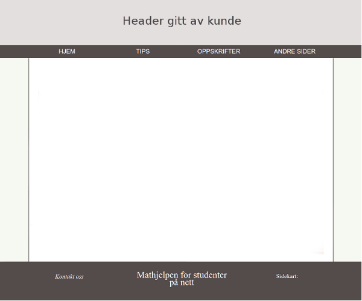Hele designet på siden, innholdet vil være i den hvite boksen.
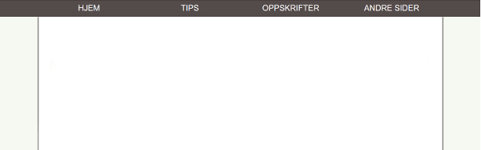Når man scroller ned vil menyen henge igjen på toppen av siden.
Spesifikasjoner som gjelder alle sider er som følgende:
- Font: Overskrifter: "Helvetica" (h1, strl: 33pt), mellomtittel: "Helvetica" (h2, strl: 27pt) navigasjonsbar: "sans-serif" (Strl: 15pt) og sideinnhold: "Times New Roman" (Strl: 14 pt).
-
Fargetema:
- Tekst i navigasjonsbar: #FFFFFF, #544b4b når man holder musen over.
- Tekst i hovedinnhold: #000000.
- Tekst i footer: #FFFFFF
- Bakgrunnsfarge i hovedinnhold: #FFFFFF
- Bakgrunnsfarge på siden: #f5f9f2
- Bakgrunnsfarge på navigasjonsbar: #544b4b, #FFFFFF når man holder musen over.
- Bakgrunnsfarge på footer: #544b4b
- Skyggelegging av hovedinnhold: #544b4b.
- Bredde på innhold: 1000px.
- Linker: Generelt: font style italic og samme farge som resten av teksten. Kursiv med fargeforandring når holder musen over. Footer: Kursiv generelt, underlinjering når man holder musen over.
- Navigasjonsbar: All caps, "inverse" farger når man holder musen over. Når man holder musen over vil man kunne se en drop-down meny som er mørk og delvis gjennomsiktig. Linkene her har også inverse farger når man holder musen over.
- Header: 1000px. bredt headerbilde som kunden bidrar med. Denne skal ineholde en logo. Bakgrunnsfargen til logoen skal matche bakgrunnsfargen på headeren slik at det ser bra ut uavhengig av skjermstørrelse.
- Footer: Matcher navigasjonsbar for å gi et helhetlig inntrykk. Inneholder linker til sosialt media, link til kontaktskjema og sitemap.
- Logo: Kunden gir oss logo. Skal ha friske farger som passer til sidens fargetema og tema.
Sidens innhold
Home
Dette er den første siden brukeren kommer inn på. Denne siden vil inneholde litt info om bakgrunnen til siden, hva man kan forvente å finne her og en tilfeldig oppskrift. Sistnevnte vil genereres tilfeldig ved hjelp av javascript, og vil derfor være forskjellig hver gang man går inne på siden.
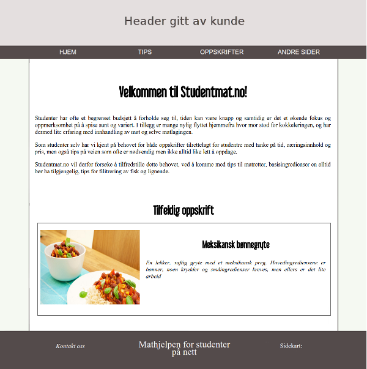
Alltid ha på kjøkkenet
- Siden vil inneholde tre bokser, en for kjøkkenskap, en for fryser og en for kjøleskap. Disse vil ha en kant rundt seg, svakt avrundet i hjørnene. Over dem ønsker kunden et passende ikon, men disse er per dags dato ikke gitt. Overskriften til hver av boksene vil være midstilt og 22pt. Listeelementene vil ikke ha noen dot/strek eller lignende forran seg. MOKUP KLAR
Middagsretter
Siden vil inneholde ca. fem middagsoppskrifter (per dags dato). Øverst vil det være en overskrift. Denne er midstilt og med h1-egenskaper. Hver oppskrift vil kunne åpnes og lukkes. I lukket tilstand vil det være et bilde på ca. 320x240 px hel til venstre, og til høyre tittelen på oppskriften og en kort beskrivelse av den i kursiv. Når en fører musa over bildet eller teksten, vil bakgrunnen til teksten få nav-barens farge, og teksten vil bli hvit. Om en klikker på enten bildet eller teksten, vil bildet komme i stort format. Det vil da være ca. 400px høyt, og gå fra den ene siden av innholdsboksen til den andre. Under vil navnet til oppskriften stå i h2-stil. Ingredienser vil være ramset opp på venstre side, med god linjeavstand og en understrekning under hver. Til høyre vil fremgangsmåtens steg være oppramset, med tall forran seg som er uthevet. Under fremgangsmåten vil det stå en eller to korte tips, og under der igjen en link til siden hvor oppskriftens inspirasjon er funnet.
Matpakkeoppskrifter
Denne siden vil opprinnelig ha et helt likt oppsett som middagsoppskrifter.
Matlagingstips
Fordi vår målgruppen ofte er nye kokker med lite erfaring, kan denne siden gi tips og instruksjoner til oppgaver som gjør livet på kjøkkenet enklere. Tipsene er for eksempel "hvordan filitere fisk" og "hvordan koke egg".
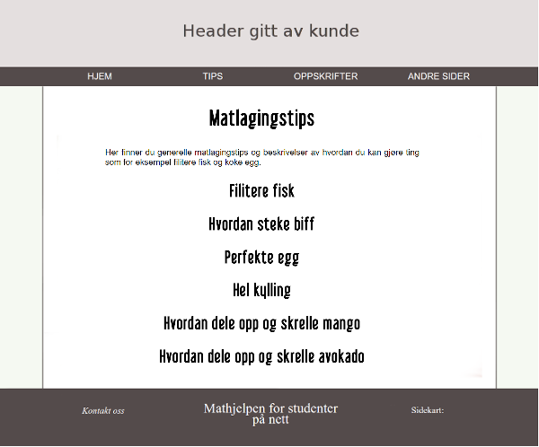Dette er siden slik den ser ut når du først kommer inn på den. herfra kan du velge ut i fra "menyen" hva du vil ha hjelp til.
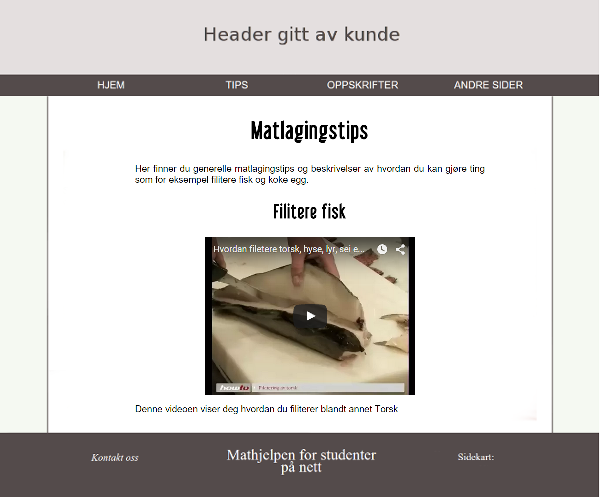Hvis du for eksempel velger "filitere fisk", vil denne siden vises. Innholdsboksen vil utvides slik at vi ser innholdet.
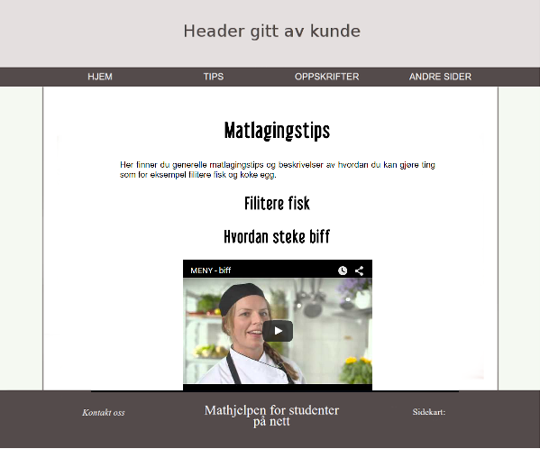Her er et eksempel på hvordan siden vil se ut når et annet tema er valgt. Også her er innholdsboksen utvidet, mens den over (filiterer fisk) har skjult seg.
Instruksjonene vil være tilgjengelig i form av tekst og/eller video. Alle filmene har høyden: 315px og vidden: 420px og vil være midtstilt, for på denne siden vil videoene være midtpunktet. Vi bruker hovedsaklig video som visningsformat, da våre brukere ikke er typen til å lese lange tekster med mange punkter. Det er også lurt å bruke video da brukeren faktisk kan se hva som blir gjort, ikke bare lese teorien om det.
Økonomi og planlegging
Siden vil fokusere på økonomi og planlegging. Dette skal gjøre matlagingen mer strukturert og hjelpe brukerne med å få orden på økonomien sin. Dette står i stil med målet vårt om å informere studenter om hvordan de kan lage mer og bedre mat på et bedre og billigere vis, og videreformidler og forsterker sidens formål som er å gjøre studenters liv en liten bit enklere. Informasjonen blir presentert hensiktsmessig ved hjelp av lister og tabeller. Det gjør det enklere for brukeren å luke ut uønsket informasjon, gjør brukeropplevelsen mer variert, og dermed også mindre kjedelig.
Fordi det er mye innhold på siden som går på både planlegging og økonomi har vi valgt å putte de to kategoriene i hver sin divisjon respektivt. Divisjonene vil være mulig å åpne og lukke ettersom det passer. Tabellen er 800px bred med solid, svart ramme på 1 px. For å gjøre den åpen, ryddig og lesbar har den luft, altså "padding" på 7 px.
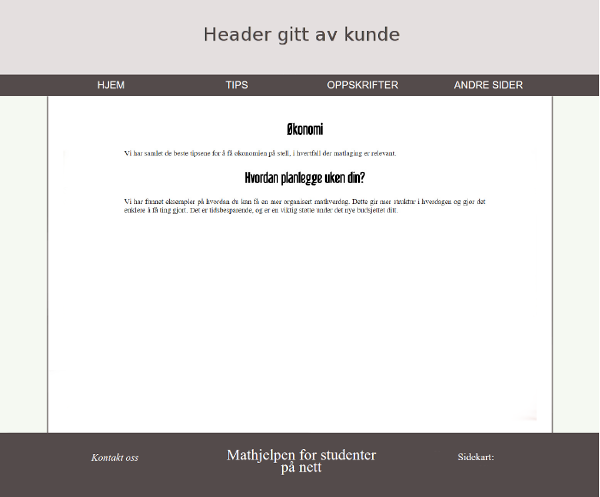Mockup 1: Hvordan siden vil se ut når du kommer inn på den.
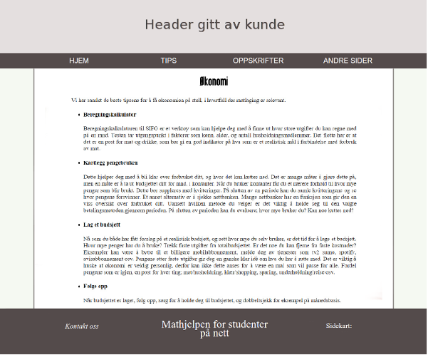Mockup 2: Om du trykker på boksen til økonomi vil den utvide boksen slik at du kan se hele innholdet.
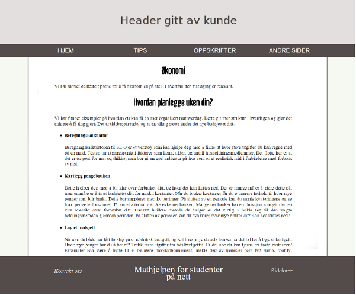Mockup 3: Om du trykker på boksen til planlegging vil den utvide boksen slik at du kan se hele innholdet.
Lagring
Siden om lagring fokuserer på å opplyse om hvordan ulike typer mat bør lagres for å oppnå lengst lagringstid og mest gunstig matkvalitet. Dette bygger opp under sidens hensikt om å gi studenter den nødvendige informasjonen til og lykkes på kjøkkenet. Lagring av mat er viktig både for kvalitet og helse, men er også med på å presse marginene der økonomien er involvert. Innholdet er sortert i både lister, tabeller og sammenhengende tekst for å skape inntrykket av en tekst som er enkel å lese. Tabellen er 800px bred med solid, svart ramme på 1 px. For å gjøre den åpen, ryddig og lesbar har den luft, altså "padding" på 7 px.
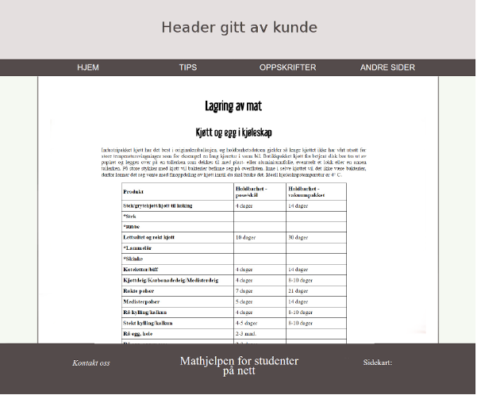Mockup 1: Eksempel på hvordan innholdet på siden om lagring av mat vil se ut.
Andre nyttige sider
På denne siden vil det være en liste med likner til andre sider kunden mener kan være nyttig for sidens brukere. Under hver link vil det være en beskrivelse av det man vil finne på siden.
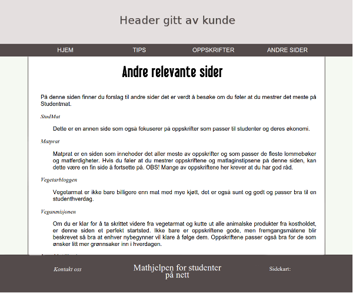Listen vil ikke ha bullet-points, og linkene vil skille seg fra resten av teksten. Beskrivelsen til linkene vil også ha et lite innrykk fra linkene.
Kontakt oss
På denne siden skal man kunne gi tilbakemeldinger til siden. Både om man har funnet en feil, eller om man har forslag til innhold. Skjemaet som blir brukt har et enkelt design, det er få felter å fylle inn slik at det går rakst og at man kommer til poenget med en gang. Det er også en dropdown-meny som gjør at man ikke trenger to forskjellige skjemaer for å rapportere to forskjellige ting. Javascript vil bli brukt for å så det til å bli mer interaktivt, man vil få tilbakemelding når skjemaet er sendt, og om man ikke har fyllt inn alt riktig.
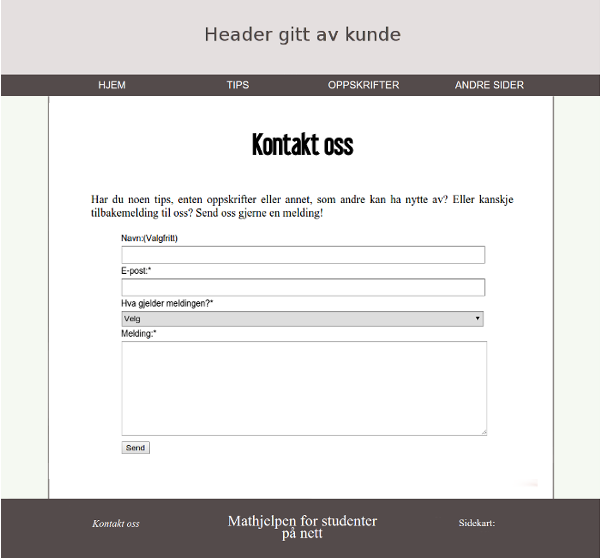Skjemaet vil se slik ut. Designet er enkelt og man ser med en gang hva man skal fylle inn/ikke trenger å fylle inn. Dropdown-menyen har to kategorier: "Forslag til innhold" og "teknisk feil på siden"
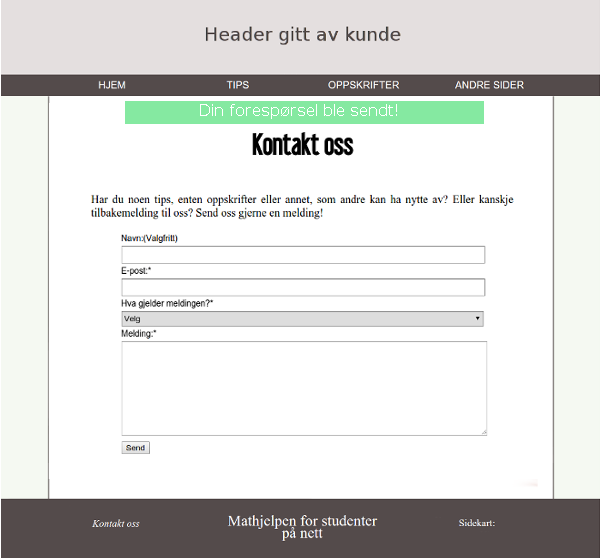Om man har fyllt inn alle feltene riktig, vil informasjonen bli sendt og man får en tilbakemelding som dette. Bakgrunnen er grønn for å vise at alt gikk greit.
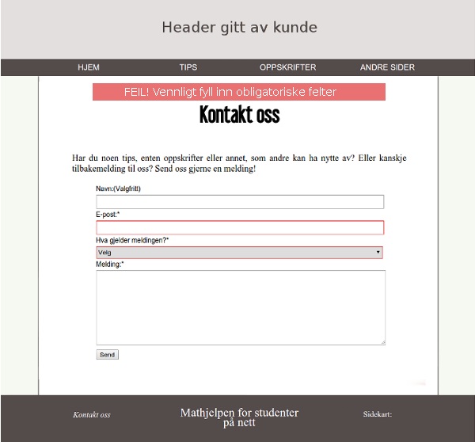Dersom man ikke har fyllt inn feltene riktig, vil man få en feilmelding der det står at man må fylle inn alle de obligatoriske feltene. Feltene som man mangler vil få en rød kant.
Minimumskrav
Vi planlegger å gjennomføre minimumskravene for bruk av Javascript på følgende måte.
Katrine og Julie:
- Skjemavalidering
- Highlighting av siden man er på i navigasjonsbar.
- Randomized oppskrift
Dette scriptet vil sørge for at man ikke kan sende inne skjema uten at alle feltene er fyllt ut. Man vil få opp en feilmelding i tillegg til at feltene som ikke er fyllt ut blir farget røde. Dette er for å få et mer brukervennlig skjema og at man lett vet hva man må endre på. Man vil også få en melding om at skjemaet ble sendt når man har sendt det inn. Dette for at man skal slippe å lure på om det skjedde noe da man trykket på "send"-knappen. Da unngår vi også at brukeren sender på nytt for å være sikker.
Dette har også med brukervennlighet å gjøre. Navigasjonsmenyen vil indikere hvilken side man er inne på slik at man har bedre oversikt. Hvis man for eksempel er inne på en av tips-sidene, vil tabben det står tips på ha en annen farge enn resten av navigasjonsmenyen.
Denne vil bli laget om vi har tid til overs, da vi ser på de andre scriptene som viktigere for brukeren. Grunnen til at det skal være en tilfeldig oppskrift på forsiden er for at brukeren raskt skal få forslag til en oppskrift, da sannsynligheten er stor for at de besøker siden for noe rakst, billig og enkelt å lage.
Dora Oline og Aasne:
- Henting av innhold fra html til main-seksjonen på index-html.
- Navigasjonsbar med drop-down meny
- Fiksert navigasjonsbar
For å slippe å skrive kode som går igjen, for eksempel header, navigasjon og footer, og også å måtte endre samme kodesnutt flere steder, vil vi benytte javascript og jQuery. Med dem vil vi ha et dokument, index.html, som har den grunnleggende strukturen, og med ulike tagger/felter for f.eks. header, navigasjonsbar, footer og innholdsboks. Vi koder så de ulike elementene i respektive filer, og laster dem inn. Dette gjør koden mer ryddig og oversiktelig, og også enklere å endre.
FYLL UT
FYLL UT
Plan
Organisatorisk oppsett
Vi har samlet alle filene våre i en mappe som heter studentmatProsjekt som vil bli opprettet nå vi kommer til kodingsfasen av prosjektet.
Liste over filer og mapper:
-
website/
general.css
index.html
script.js
-
alltidHa.html
footer.html
home.html
kontakt.html
lagring.html
linker
matpakker.html
middager.html
nav.html
okonomiOgPlanlegging.html
matlagingstips.html
html
-
bilder/
- header.jpg
oppskriftsbilder/
BLT-sandwich.jpg
ertesuppe.jpg
falafler.jpg
gulrotsuppe.jpg
kyllingfrikasse.jpg
meksikanskbondegryte.jpg
ostskinkemuffins.jpg
pastasalat.jpg
pitaMedKremost.jpg
Pizzasnurrer.jpg
-
icons/
cabinet.png
facebook.jpg
facebook.png
instagram.png
freezer.png
fridge.png
noun_34918_cc.png
noun_38566_cc.png
Arbeidsfordeling og frister
| Filenavn | Beskrivelse | Ansvar | Frist |
|---|---|---|---|
| index.html | Forsiden. Kort info om sidens bakgrunn, innhold og en tilfeldig oppskrift brukeren kan starte med. | Katrine | 29.10.2015 |
| nav.html | Linker til alle sidens undersider, med unntak av kontaktskjema, som vil ligge i footer. | Alle | 12.11.2015 |
| alltidHa.html | Dora Oline | 29.10.2015 | |
| matlagingstips.html | Julie | 29.10.2015 | |
| middager.html | Dora Oline | 29.10.2015 | |
| matpakker.html | Dora Oline | 29.10.2015 | |
| okonomiogplanlegging.html | Tips til hvordan man kan få struktur på bruk og økonomi, hvordan man skal klare å holde seg til et budsjett, og hvordan man kan planlegge for å gi mest effektiv og økonomisk matlaging. | Aasne | 29.10.2015 |
| lagring.html | Oppsummerende oversikt over hvordan man bør lagre typiske ingredienser man har i kjøkkenet. | Aasne | 29.10.2015 |
| andresider.html | Linker til andre sider, nyttig for de som kan mye av det som er på vår side, og som vil lære mer. | Katrine | 29.10.2015 |
| kontakt.html | Skjema for tilbakemelding, nyttig for videre drift av siden. | Katrine | 29.10.2015 |
| "design" | Alle | 12.11.2015 | |
| "javascript" | Alle | 12.11.2015 | |
| "style.css" | Alle | 12.11.2015 |